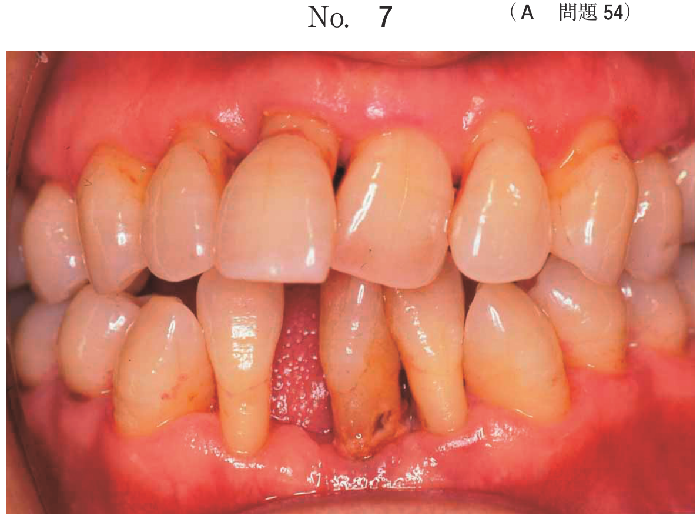
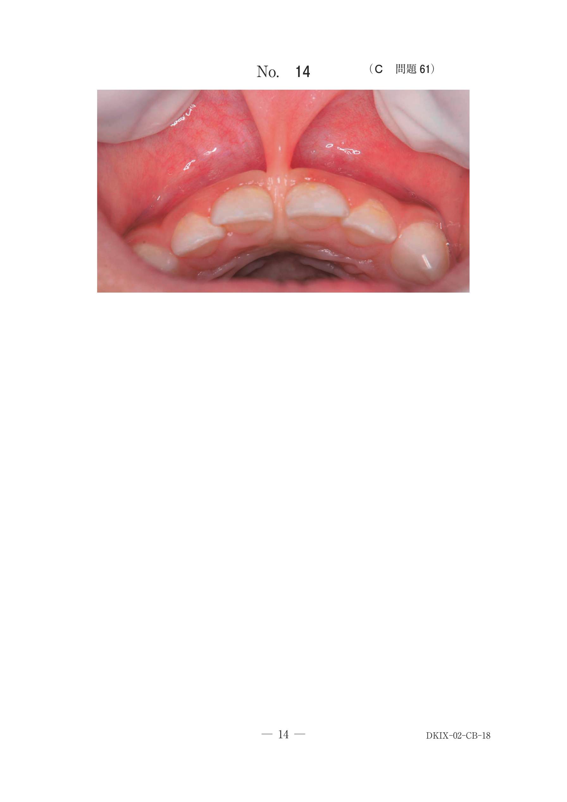
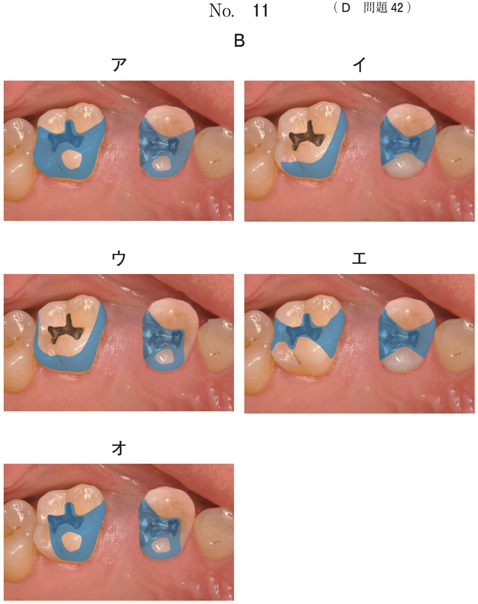

全身麻酔器（循環式麻酔回路）は以下の部品で構成される。
| 部品 | 機能 |
|---|---|
| 酸素ボンベ | 酸素を供給（緑色）、圧力計で残量確認 |
| 流量計 | 各ガスの流量（L/分）を調整・表示 |
| 気化器 | 吸入麻酔薬を気化して混合 |
| 部品 | 機能 |
|---|---|
| CO2アブソーバー | 呼気中の炭酸ガスを除去 |
| 呼吸バッグ | 調節呼吸・補助呼吸に使用 |
| APL弁 | 回路内圧を調節（余剰ガス排出） |
| Yアダプター | 吸気・呼気の分岐点 |
ソーダライムやバラライムを充填した装置で、呼気中のCO2を吸収する。
全身麻酔器の一部の写真（別冊No.11）を別に示す。
矢印で示す装置の主たる目的はどれか。1つ選べ。

【解説】矢印が示す円筒形の容器（茶色の顆粒入り）はソーダライムキャニスター（CO2アブソーバー）。呼気中の炭酸ガス（CO2）を除去し、再吸入による高炭酸ガス血症を防ぐ。
流量計は医療ガスの流量を表示する。カラーコードで識別される。
| ガス | 色 | FiO2 |
|---|---|---|
| 酸素（O2） | ●緑 | 1.0（100%） |
| 空気（Air） | ●黄 | 0.21（21%） |
| 亜酸化窒素（N2O） | ●青 | 0 |
FiO2 = (O2流量 × 1.0 + Air流量 × 0.21) / 総流量
全身麻酔器の一部の写真（別冊No.18）を別に示す。
吸入酸素濃度はどれか。1つ選べ。

【解説】流量計の読み取り：O2（緑）= 1.0 L/min、Air（黄）= 5.0 L/min、N2O（青）= 0
FiO2 = (1.0×1.0 + 5.0×0.21) / 6.0 = (1.0 + 1.05) / 6.0 ≒ 0.34（34%）
酸素ボンベの残量は圧力計から計算できる。
残量（L） = ボンベ容量 × (現在の圧力 / 最高充填圧力)
使用可能時間 = 残量 / 流量（L/分）
78歳の男性。全身麻酔下での手術終了後、酸素マスクを装着して病棟に帰室させることとした。ガス容量500Lの医療用酸素ボンベ（最高充填圧力：14.7MPa）に装着された圧力計の写真（別冊No.19）を別に示す。
流量3L／分で使用した場合、酸素ボンベが空になるまでの時間はどれか。1つ選べ。

【解説】圧力計は約8MPaを示している。
残量 = 500L × (8/14.7) ≒ 272L
使用時間 = 272L ÷ 3L/分 ≒ 約90分